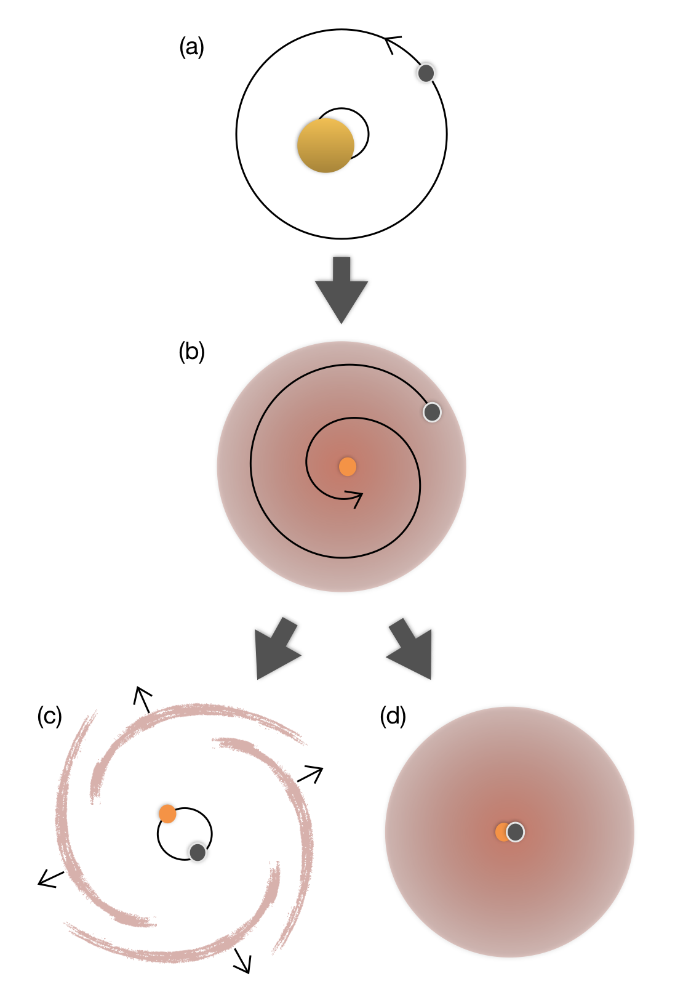

Research
Key Parameters in Common Envelope Evolution
 Binary systems can be comprised of any combination of astrophysical objects, from stars and planets to neutron stars and black holes. In a post-LIGO-detection age, we endeavor to explain the existence of close binaries that are able to merge on a timescale less than the age of the universe, as well as the rate of such mergers. Though the start-to-finish evolution of these systems in general is of interest, it is practical to investigate phases of evolution that offer the possibility of being observed; the traditional formation channel for close binaries, in which a common envelope (CE) phase dramatically reduces the separation of a pre-existing binary system, offers that possibility.
The onset of the CE phase occurs when the expanding envelope of one of the stars in the binary extends to the orbit of the other star (or planet, black hole, etc.) and engulfs it (a → b). Due to gravitational interactions between the embedded object and the envelope material, a drag force acts on the former and it eventually plunges in toward the core of the expanding star (b). Depending upon the amount of energy the embedded object can deposit into the envelope material and the timescales on which this energy can be transported throughout the envelope, the CE phase may end in either the ejection of the envelope and a surviving binary comprised of the embedded object and the remaining core at greatly reduced separation (c), or a merger of the two with envelope intact (d).
My work focuses on key physical parameters that describe the CE phase for a range of initial systems, giving insight on the inspiral phase and the final system configuration. This includes looking at the impact of envelope structure on drag forces and expected accretion, as well as inspiral and energy transport timescales, leading to exciting insights about CE as a formation channel for some of the most exotic astrophysical configurations in the universe.
For a current list of publications, see ADS or my CV